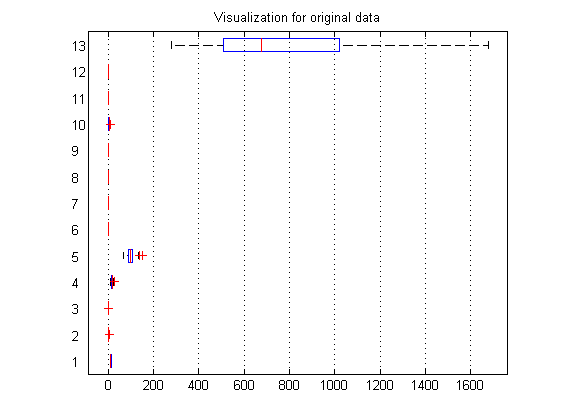
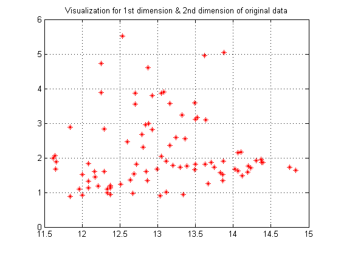
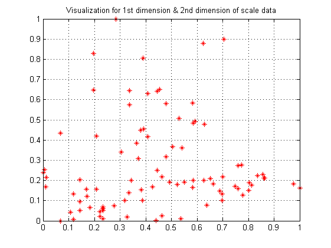
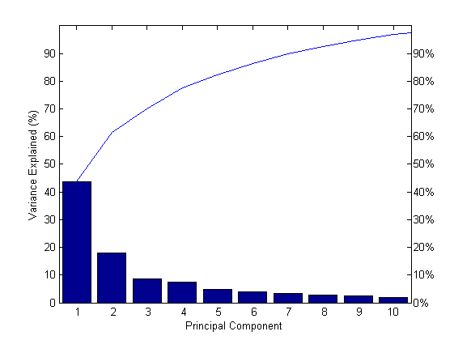
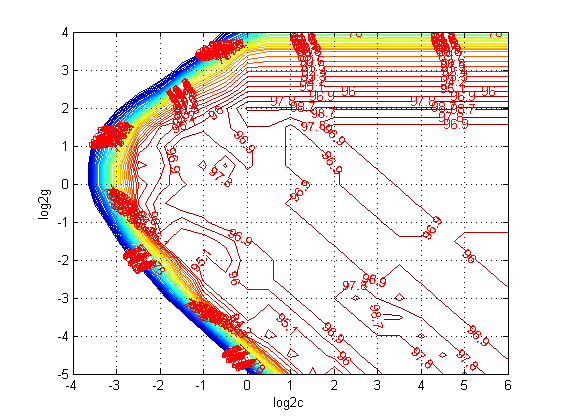

Contents
a_template_flow_usingSVM_classification
for classificaton
clear; clc;
载入数据
load wine;
提取数据
train_data = [wine(1:30,:);wine(60:95,:);wine(131:153,:)]; train_data_labels = [wine_labels(1:30);wine_labels(60:95);wine_labels(131:153)]; test_data = [wine(31:59,:);wine(96:130,:);wine(154:178,:)]; test_data_labels = [wine_labels(31:59);wine_labels(96:130);wine_labels(154:178)];
原始数据可视化
figure; boxplot(train_data,'orientation','horizontal'); grid on; title('Visualization for original data'); figure; for i = 1:length(train_data(:,1)) plot(train_data(i,1),train_data(i,2),'r*'); hold on; end grid on; title('Visualization for 1st dimension & 2nd dimension of original data'); 
归一化预处理
[train_scale,test_scale] = scaleForSVM(train_data,test_data,0,1);
归一化后可视化
figure; for i = 1:length(train_scale(:,1)) plot(train_scale(i,1),train_scale(i,2),'r*'); hold on; end grid on; title('Visualization for 1st dimension & 2nd dimension of scale data');
降为预处理(pca)
[train_pca,test_pca] = pcaForSVM(train_scale,test_scale,90);
feature selection
using GA,...,etc.
参数c和g寻优选择
[bestacc,bestc,bestg] = SVMcgForClass(train_data_labels,train_pca,-4,6,-5,4,3,0.5,0.5,0.9) cmd = ['-c ',num2str(bestc),' -g ',num2str(bestg)];
bestacc =
98.8764
bestc =
0.7071
bestg =
1.4142
 分类预测
model = svmtrain(train_data_labels, train_pca,cmd); [ptrain_label, train_acc] = svmpredict(train_data_labels, train_pca, model); [ptest_label, test_acc] = svmpredict(test_data_labels, test_pca, model);
Accuracy = 98.8764% (88/89) (classification) Accuracy = 97.7528% (87/89) (classification)